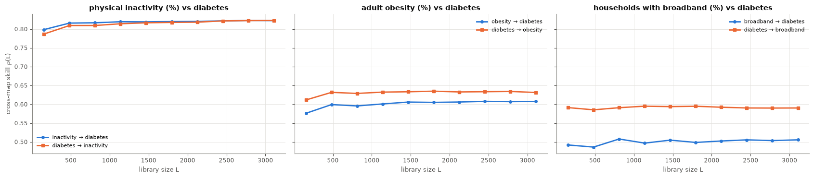
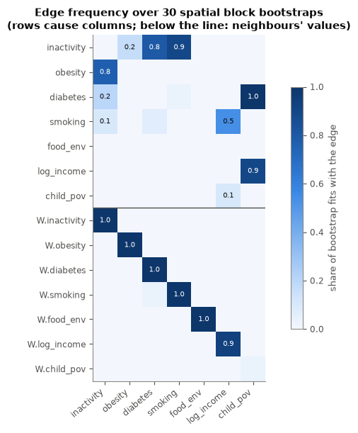

This notebook learns directed relationships among county health measures. A simulated 24-year panel on the real county map is the case with a known direction. Geographical convergent cross mapping and NOTEARS use real 2024 County Health Rankings measures, where no ground truth exists.
The methods are spatial Granger causality, geographical convergent cross mapping, and NOTEARS with spatial-lag nodes. The classes are SpatialGranger and GCCM in geolattice.spatial_analysis.spatialcausal.
The earlier notebooks assumed a causal structure (treatment → outcome) and estimated its strength. Causal discovery tries to learn the structure from data. It needs strong assumptions, and its output is a set of hypotheses to be tested with designs like those in notebooks 01-07, never a conclusion.
Spatial panel Granger causality is fit to the simulated panel, where the direction is known. Geographical convergent cross mapping (GCCM) and NOTEARS with spatial-lag nodes are applied to real CHR 2024 county measures, where no ground truth exists.
Installation. This notebook needs installation option 3 (core, spatial analysis and spatial statistics): pip install "geolattice[statistics]". See “Installation options” in the GeoLattice README.
Code
import warningswarnings.filterwarnings("ignore")import numpy as np, pandas as pd, matplotlib.pyplot as pltimport geolattice.spatial_analysis.spatialcausal as sc, countycausal as cc, tutorial_style as tsfrom geolattice.spatial_analysis.spatialcausal._utils import as_sparse_weightsts.use()g = cc.build_county_frame()w = cc.queen_weights()xy = cc.coords_km(g)n =len(g)
Spatial Granger causality
\(x\)Granger-causes\(y\) if past \(x\) improves the prediction of \(y\) beyond \(y\)’s own past. With county panels and neighbours:
\(H_0^{\text{local}}:\beta=0\) (own past \(x\)) and \(H_0^{\text{spillover}}:\eta=0\) (neighbours’ past \(x\)) are tested with cluster-robust Wald statistics and a Hotelling-type \(F(q,G-q)\) reference.
Two traps, both handled by SpatialGranger:
Nickell bias. With unit fixed effects and lagged regressors, the within transformation correlates the demeaned error with the demeaned lags: the bias is of order \(1/T\) (Nickell, 1981). In a large panel this small bias becomes “significant” and produces spurious Granger causality. The half-panel jackknife (Dhaene & Jochmans, 2015) removes the \(O(1/T)\) term: \(\hat\beta_{\text{HJ}}=2\hat\beta-\tfrac12(\hat\beta_{\text{first half}}+\hat\beta_{\text{second half}})\).
Cross-sectional dependence. Shocks hitting neighbouring counties in the same year make unit-clustered SEs too small; we cluster on spatial blocks of counties.
Why not the CHR panel? CHR offers six annual releases (2020-2025), many measures pool several data years, and adjacent releases overlap. That is too few, too smooth time points for dynamic models (the jackknife needs at least three periods per half). We therefore simulate a 24-year panel on the real county map: \(x\) is a spatially autocorrelated AR(1) process, and \(y_{it}=0.4y_{i,t-1}+0.5x_{i,t-1}+0.4(Wx)_{i,t-1}+a_i+e_{it}\), so \(x\to y\) and not\(y\to x\).
Code
rng = np.random.default_rng(5)Wr = as_sparse_weights(w, n, row_standardize=True)T_, burn =24, 20x = np.zeros((n, T_ + burn)); y = np.zeros((n, T_ + burn)); a = rng.normal(0, 0.5, n)for t inrange(1, T_ + burn): shock = rng.normal(size=n) x[:, t] =0.5* x[:, t -1] +0.5* (Wr @ shock) +0.5* shock y[:, t] =0.4* y[:, t -1] +0.5* x[:, t -1] +0.4* (Wr @ x[:, t -1]) + a + rng.normal(0, 0.7, n)x, y = x[:, burn:], y[:, burn:]panel = sc.SpatialPanel(np.repeat(g.fips, T_), np.tile(np.arange(T_), n), y.ravel(), g.fips, xy, X=x.ravel()[:, None])fwd = sc.SpatialGranger(lags=1, w=w).fit(panel, cause=0)print(fwd.summary())
Spatial Granger causality (lags=1)
========================================
coef se t p_value
y_lag1 0.4045 0.0030 133.5255 0.0000
Wy_lag1 0.0140 0.0063 2.2183 0.0265
x_lag1 0.5030 0.0061 82.0812 0.0000
Wx_lag1 0.3936 0.0103 38.2752 0.0000
H0 no local Granger causality: F=6737.323, df=(1, 309), p=7.156e-212
H0 no spillover Granger causality: F=1464.995, df=(1, 309), p=2.712e-119
H0 no joint Granger causality: F=9447.778, df=(2, 308), p=3.945e-277
Code
rows = {}for bc in (None, "jackknife"):for cl in ("unit", "spatial"): r = sc.SpatialGranger(lags=1, w=w, bias_correction=bc, cluster=cl).fit(panel, cause=panel.y, effect=x.ravel())# in the reverse regression the "effect" is x and the "cause" is y:# y_lag1 = x's own lag (truth 0.5), x_lag1 = lagged y (truth 0) rows[(bc or"none", cl)] = {"x's own lag (truth 0.5)": r.coef_.loc["y_lag1", "coef"],"lagged y (truth 0)": r.coef_.loc["x_lag1", "coef"],"p: y Granger-causes x": r.tests_["joint"]["p_value"]}rev = pd.DataFrame(rows).Trev.index.names = ["bias correction", "clustering"]rev.round(4)
x's own lag (truth 0.5)
lagged y (truth 0)
p: y Granger-causes x
bias correction
clustering
none
unit
0.4322
-0.0175
0.0000
spatial
0.4322
-0.0175
0.0000
jackknife
unit
0.5039
-0.0008
0.7696
spatial
0.5039
-0.0008
0.8713
In the reverse regression (does \(y\) Granger-cause \(x\)?), Nickell bias pulls \(x\)’s own persistence down from 0.5 to 0.43 and pushes the coefficient on lagged \(y\) away from 0. With about 71,500 observations that small bias is “significant” (\(p<0.0001\)): a spurious causal finding. The half-panel jackknife restores both coefficients and the test no longer rejects. In this simulation the shocks’ spatial correlation is mild, so clustering matters less than the bias correction.
Geographical convergent cross mapping (GCCM) on real data
CCM (Sugihara et al., 2012) comes from dynamical systems. If \(x\) drives \(y\), then \(y\)’s state carries an imprint of \(x\), so \(x\) can be cross-mapped (predicted) from a reconstruction of \(y\)’s state space. GCCM (Gao et al., 2023) replaces time delays with spatial lags:
\[M_y(i)=\Big(y_i,\ \bar y^{(1)}_i,\ \dots,\ \bar y^{(E-1)}_i\Big),\qquad \bar y^{(k)}_i=\text{mean of }y\text{ over the }k\text{-th ring of neighbours}.\]
To predict \(x_i\), find the \(E+1\) nearest neighbours of \(M_y(i)\) among a library of \(L\) counties and average their \(x\) with weights \(w_k\propto\exp(-d_k/d_1)\) (simplex projection). The cross-map skill is \(\rho(L)=\operatorname{corr}(\hat x,x)\). Evidence for \(x\to y\) is skill that rises and converges as \(L\) grows, not merely high skill.
A spatial exclusion zone is essential. Neighbouring counties share neighbour rings, so their embeddings are similar by construction. Using them as “nearest neighbours” lets ordinary spatial autocorrelation masquerade as cross-map skill. geolattice.spatial_analysis.spatialcausal excludes every county within \(2(E-1)\) rings of the target, a spatial analogue of the Theiler window. (In package tests, two independent smooth fields showed skill ≈ 0.5 without it.)
Code
pairs = [("inactivity_pct", "diabetes_pct"), ("obesity_pct", "diabetes_pct"), ("broadband_pct", "diabetes_pct")]fits = {}for xa, ya in pairs: fits[(xa, ya)] = sc.GCCM(E=3, n_rep=8, random_state=0).fit(g[xa].to_numpy(), g[ya].to_numpy(), w=w)leak = sc.GCCM(E=3, n_rep=8, exclusion=0, random_state=0).fit(g["inactivity_pct"].to_numpy(), g["diabetes_pct"].to_numpy(), w=w)fig, ax = plt.subplots(1, 3, figsize=(17, 3.8), sharey=True)for a, (xa, ya) inzip(ax, pairs): sk = fits[(xa, ya)].skill_ a.plot(sk.index, sk["x_causes_y"], "o-", color=ts.BLUE, ms=4, label=f"{xa.replace('_pct','')} → diabetes") a.plot(sk.index, sk["y_causes_x"], "s-", color=ts.ORANGE, ms=4, label=f"diabetes → {xa.replace('_pct','')}") a.set_xlabel("library size L"); a.set_title(f"{cc.LABELS[xa]} vs diabetes") a.legend(fontsize=8)ax[0].set_ylabel("cross-map skill ρ(L)")plt.tight_layout()tests = pd.DataFrame({f"{xa} | {k}": v for (xa, ya), f in fits.items() for k, v in f.tests_.items()}).Ttests.round(3)
skill
p_skill
convergence_gain
p_convergence
inactivity_pct | x_causes_y
0.822
0.0
0.024
0.000
inactivity_pct | y_causes_x
0.823
0.0
0.036
0.000
obesity_pct | x_causes_y
0.608
0.0
0.031
0.001
obesity_pct | y_causes_x
0.631
0.0
0.020
0.074
broadband_pct | x_causes_y
0.505
0.0
0.014
0.079
broadband_pct | y_causes_x
0.590
0.0
-0.001
0.556

Code
print("inactivity vs diabetes, no exclusion zone:", {k: round(v["skill"], 3) for k, v in leak.tests_.items()})print("inactivity vs diabetes, exclusion zone: ", {k: round(v["skill"], 3) for k, v in fits[("inactivity_pct", "diabetes_pct")].tests_.items()})
inactivity vs diabetes, no exclusion zone: {'x_causes_y': 0.841, 'y_causes_x': 0.84}
inactivity vs diabetes, exclusion zone: {'x_causes_y': 0.822, 'y_causes_x': 0.823}
Reading these results:
Skill is high for every pair (0.5-0.8), including broadband access, which nobody would argue causes diabetes. High skill alone reflects shared socioeconomic structure, not causation.
Convergence is the CCM criterion. Inactivity and diabetes converge in both directions, which CCM cannot separate from a common driver (income, rurality, regional culture, or county estimates modelled from the same surveys). Obesity → diabetes converges and the reverse is borderline (p ≈ 0.07). Broadband shows no clear convergence in either direction.
On these real data the exclusion zone lowers skill only slightly (0.84 → 0.82), so the patterns are not mainly neighbour leakage; on smooth simulated fields it removed most of the skill.
GCCM was designed for coupled nonlinear dynamics. Cross-sections of socially patterned county statistics violate its assumptions, so treat these patterns as descriptive.
NOTEARS with spatial-lag nodes on real data
A linear structural equation model writes the variables as \(\mathbf X=\mathbf X\mathbf W+\mathbf E\), where \(W_{jk}\ne0\) means \(x_j\to x_k\). Learning \(W\) is a search over directed acyclic graphs, which is combinatorial. NOTEARS (Zheng et al., 2018) replaces it with a smooth constraint:
\[\min_W\ \frac{1}{2n}\lVert\mathbf X-\mathbf X W\rVert_F^2+\lambda\lVert W\rVert_1
\quad\text{s.t.}\quad h(W)=\operatorname{tr}\!\big(e^{W\circ W}\big)-d=0,\]
where \(h(W)=0\) exactly when the graph has no cycles (the trace counts weighted closed walks). It is solved by an augmented Lagrangian with L-BFGS, then small weights are thresholded.
Spatial version. We add nodes \((Wx)_j\), the neighbours’ average of each variable, and forbid any edge into them. Learned edges are then either local (\(x_j\to x_k\)) or spillover (\(Wx_j\to x_k\): the neighbours’ level of \(x_j\) affects a county’s \(x_k\)).
Identifiability and scale. Linear-Gaussian structure is only identified up to an equivalence class, and NOTEARS partly exploits differences in marginal variance (“varsortability”, Reisach et al., 2021). Results on raw and standardised data can differ, so we standardise (comparable penalties) and check stability with a spatial block bootstrap.
Spatial NOTEARS edges
=====================
source target weight type
W.inactivity inactivity 0.602 spillover
inactivity diabetes 0.549 local
inactivity smoking 0.449 local
obesity inactivity 0.406 local
W.obesity obesity 0.883 spillover
W.diabetes diabetes 0.488 spillover
diabetes child_pov 0.371 local
W.smoking smoking 0.584 spillover
smoking log_income -0.314 local
W.food_env food_env 0.449 spillover
W.log_income log_income 0.477 spillover
log_income child_pov -0.468 local
Code
# spatial block bootstrap: lag nodes are computed on the full map, then whole blocks of counties are resampledZ = g[V].to_numpy(); Z = (Z - Z.mean(0)) / Z.std(0)L = np.asarray(Wr @ Z)data = np.hstack([Z, L])d =len(V)mask = np.ones((2* d, 2* d), bool); mask[:, d:] =Falseblocks = sc.SpatialBlockKFold(n_splits=2, n_blocks=150, random_state=0).make_blocks(xy)members = [np.flatnonzero(blocks == b) for b in np.unique(blocks)]B =30freq = np.zeros((2* d, d))rngb = np.random.default_rng(1)for _ inrange(B): idx = np.concatenate([members[i] for i in rngb.integers(0, len(members), len(members))]) Wb = sc.notears_linear(data[idx], lambda1=0.05, w_threshold=0.3, mask=mask) freq += (Wb[:, :d] !=0)freq /= Bfig, ax = plt.subplots(figsize=(7.5, 6.2))im = ax.imshow(freq, cmap=ts.SEQ, vmin=0, vmax=1)ax.set_xticks(range(d), short, rotation=40, ha="right")ax.set_yticks(range(2* d), short + [f"W.{s}"for s in short])ax.axhline(d -0.5, color=ts.INK2, lw=1)for i inrange(2* d):for j inrange(d):if freq[i, j] >=0.1: ax.text(j, i, f"{freq[i, j]:.1f}", ha="center", va="center", fontsize=7.5, color="white"if freq[i, j] >0.6else ts.INK)ax.grid(False)ax.set_title("Edge frequency over 30 spatial block bootstraps\n(rows cause columns; below the line: neighbours' values)")plt.colorbar(im, ax=ax, shrink=0.7, label="share of bootstrap fits with the edge")plt.tight_layout()

How to read the graph:
The strongest and most stable edges are spillover self-edges (\(W.x\to x\)): every measure resembles its neighbours’ values. That is spatial autocorrelation, which this model can only represent as “neighbours cause”.
Among local edges, inactivity → diabetes (80% of fits) agrees with clinical knowledge, and so does log income → child poverty (90%).
Stability is not correctness. Diabetes → child poverty appears in all 30 fits, a perfectly stable edge whose direction is implausible. The bootstrap measures robustness to sampling; it says nothing about whether NOTEARS oriented the edge correctly. In linear models with roughly Gaussian errors, orientation rests largely on variance patterns (varsortability), not on causal information.
Edges present in fewer than about 70% of fits (smoking → log income, 60%) should not be interpreted.
Summary and Conclusions
Discovery methods generate hypotheses. Their assumptions (no hidden common causes, correct functional form, acyclicity, deterministic coupling for CCM) are rarely met by county statistics.
Spatial data create spurious “discoveries” unless handled: Nickell bias and cross-sectional dependence in Granger tests, spatial autocorrelation in cross mapping, neighbour similarity in structure learning.
Report stability (bootstrap edge frequencies, convergence in both directions), not a single graph.
Take a stable discovered edge, such as inactivity → diabetes, back to a design: a quasi-experiment or trial in which the direction is identified by the intervention, not by the data’s correlations.
Resources
Papers
Reference
Notes
Nickell (1981)
\(O(1/T)\) bias from unit fixed effects and lagged regressors
Dhaene & Jochmans (2015)
Half-panel jackknife
Sugihara et al. (2012)
Convergent cross mapping
Gao et al. (2023)
Geographical CCM: spatial lags in place of time delays
Zheng et al. (2018)
NOTEARS
Reisach et al. (2021)
Varsortability: linear NOTEARS can orient edges from marginal variances
In this library
Object
Role
SpatialGranger
Local and spillover Granger tests, jackknife, spatial-block clustering
GCCM
Cross-map skill \(\rho(L)\) with a spatial exclusion zone
Spatial NOTEARS
Lag nodes \((Wx)_j\) that cannot be children, plus a block bootstrap